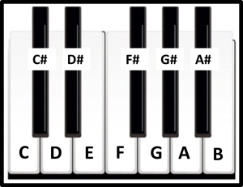

Nesse tópico, iremos mostrar como se localizam as 12 notas em alguns instrumentos:
Vamos começar pelo teclado/ piano.
Nesse instrumento, as teclas pretas contêm as notas com alterações (sustenidos) e as teclas brancas contêm as demais notas. Observe abaixo:
No violão/ guitarra, cada corda solta corresponde a uma determinada nota (E, B, G, D, A, E, respectivamente da mais aguda para a mais grave). As demais notas estão distribuídas conforme o desenho abaixo, onde os números representam as casas do braço:
Observe que no violão é um pouco difícil decorar onde ficam todas as notas, mas isso se tornará mais fácil à medida que você for estudando os assuntos aqui do site, pois existem muitos atalhos que ajudam na localização imediata (pensar nos graus, acordes, escalas, etc.). Com o tempo, certamente o braço desse instrumento estará completamente dominado por você, não se preocupe.